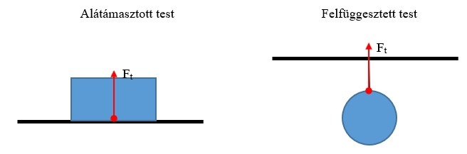

Nehézségi erő, súly
Nehézségi erő súly
A szabadon eső testek g gyorsulással esnek a Föld középpontja felé. A nehézségi gyorsulást a nehézségi erő hozza létre, amelynek iránya mindig a Föld középpontja felé mutat.
A nehézségi erő nagysága a tömeg és a nehézségi gyorsulás szorzata.
Jele F(neh); Fneh= m * g
Azt az erőt, amellyel a nyugalomban lévő test az alátámasztást nyomja, illetve amellyel a függőleges felfüggesztést húzza, súlynak vagy súlyerőnek nevezzük. Jele: G.
Súly és súlytalanság
Vizsgáljuk meg, mi történik, ha egy test alól kivesszük az alátámasztást.
Az alátámasztást megszüntetve a testre csak a nehézségi erő, hat tehát a test szabadon esik.
Így a test az alátámasztást nem nyomja, tehát szabadeséskor a testnek nincs súlya.
Ilyen állapotba kerül például az asztalról leeső könyv, a repülőgépből kiugró ejtőernyős az ejtőernyő kinyitásáig, az űrhajós azokban az időszakokban, amikor nincs az űrhatjó hajtóműve bekapcsolva, vagy a hajítási parabolán mozgó repülőgép néhány másodpercig.
Tehát a súlytalansági állapot nem más, mint a testek szabadesése, vagyis egy g nehézségi gyorsulással történő gyorsulás a Föld középpontja felé.
A súlytalanság állapotában a testre a nehézségi erőn kivűl semmilyen más erő nem hat.
Ez azt is jelenti, hogy a test nem nyomja az alátámasztási területet, és nem húzza a felfügesztés.